Chords-Web#
Ringkasan#
Chords-Web adalah aplikasi web sumber terbuka yang dirancang untuk visualisasi sinyal real-time, khususnya disesuaikan untuk sinyal bio-potensial seperti EEG, EMG, ECG dan EOG. Alat ini berfungsi sebagai alternatif canggih untuk plotter serial Arduino IDE standar, menawarkan fungsionalitas yang ditingkatkan untuk siswa, peneliti dan hobiis yang ingin merekam data bio-potensial menggunakan BioAmp hardware.
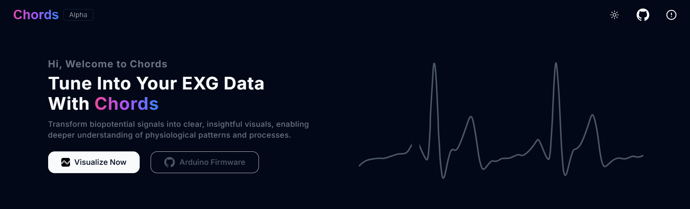
Kompatibilitas Browser#
Aplikasi web kompatibel dengan Web Serial API, yang penting untuk fungsionalitasnya. Browser yang didukung termasuk versi terbaru dari:
Google Chrome
Microsoft Edge
Opera
Jika browser pengguna tidak mendukung Web Serial API, pesan akan memberi tahu mereka tentang ketidakcocokan, merekomendasikan penggunaan browser yang didukung.
Untuk informasi lebih lanjut, lihat MDN Web Docs tentang Web Serial API.
Persyaratan Perangkat Lunak#
Arduino Firmware (Gunakan perangkat lunak ini untuk mengunggah firmware Chords Arduino ke papan pengembangan Anda).
NPG Lite Flasher (Gunakan perangkat lunak ini untuk mengunggah firmware NPG Lite ke papan NPG Lite Anda atau papan berbasis ESP32).
Browser berbasis Chromium (Pelajari lebih lanjut tentang Kompatibilitas Browser).
Persyaratan Perangkat Keras#
Papan pengembangan (lihat daftar Compatible Development Boards)
Kabel USB (tergantung pada papan)
BioAmp Hardware dan aksesorisnya
Menyiapkan perangkat keras#
Buat semua koneksi sesuai dengan perangkat keras yang Anda gunakan, termasuk koneksi sensor dengan papan pengembangan, koneksi tubuh dengan sensor, dan koneksi dari papan pengembangan ke laptop.
Mengunggah kode#
Hubungkan papan Arduino Anda ke laptop menggunakan kabel USB.
Buka Arduino Firmware untuk papan Anda di Arduino IDE.
Navigasi ke Tools > Board dan pilih papan Anda.
Di menu tools, pilih port COM yang benar (yang hilang ketika papan terputus).
Unggah kode dan buka Chords-Web di browser web Anda.
Setelah siap, unggah firmware ke papan pengembangan Anda. Kunjungi repositori GitHub Chords Arduino Firmware, gulir ke tabel papan yang didukung, cari papan Anda, dan klik sketsa Arduino yang sesuai.
Salin sketsa, tempel ke Arduino IDE, pergi ke Tools, pilih papan dan port COM yang benar, lalu klik tombol unggah.
Untuk mempelajari cara mem-flash kode di Papan NPG Lite, lihat:
Membuka Chords-web#
Buka browser berbasis Chromium seperti Google Chrome, Microsoft Edge, Opera, brave, dll.
Cari chords.upsidedownlabs.tech .
Klik pada visualize now.
Gambar di tengah menunjukkan gambaran umum koneksi perangkat keras Anda sejauh ini.
Di bagian bawah, Anda dapat melihat tombol untuk mengakses berbagai aplikasi, yang dibahas di bawah:
Aplikasi#
Chords Visualizer#
Chords Visualizer adalah alat web-based yang kuat yang dirancang untuk akuisisi dan analisis sinyal bio-potensial real-time yang mulus. Dirancang untuk peneliti, pengembang, dan penggemar, aplikasi ini menyediakan antarmuka intuitif untuk memantau beberapa saluran, menerapkan filter canggih, dan mengelola data yang direkam secara efisien. Baik Anda menganalisis sinyal EMG, ECG, EOG, atau EEG, aplikasi ini memastikan pengalaman yang lancar dan interaktif, menyederhanakan akuisisi data dan meningkatkan interpretasi sinyal.
Fitur#
Fitur |
Deskripsi |
|---|---|
Konektivitas Tanpa Usaha |
Secara instan mendeteksi BioAmp Hardware yang menjalankan Chords-Web Arduino Firmware, menyederhanakan pengaturan dan memastikan alur kerja yang lancar dari akuisisi data ke visualisasi. |
Visualisasi Real-time |
Rasakan rendering data real-time yang lancar yang didukung oleh WebGL-Plot. Memastikan tampilan sinyal yang tidak terputus untuk pemantauan data yang lancar. |
Frame Buffer & Snapshot |
Menyimpan lima snapshot terakhir, dengan kontrol kiri/kanan untuk navigasi. Mengubah jumlah saluran mereset snapshot untuk akurasi. Pengguna dapat zoom in dan out untuk tampilan detail atau luas. |
Perekaman & Manajemen Data |
Rekam data dalam format CSV tanpa batas waktu atau dengan timer. Kelola file melalui menu popover dan unduh atau hapus secara individual atau sebagai ZIP dengan satu klik. |
Zoom & Basis Waktu |
Gunakan kontrol Zoom-In & Zoom-Out untuk fokus pada detail sinyal. Sesuaikan Time Base Slider dari 1 hingga 10 detik per frame untuk visualisasi data yang fleksibel. |
Opsi Filter |
Tingkatkan sinyal bio-potensial menggunakan notch filter dan bandpass filters. Terapkan secara individual per saluran atau secara kolektif melalui master filter. |
Dukungan Saluran |
Mendukung plotting multi-saluran real-time dengan stream berwarna. Mampu menampung hingga 16 saluran, tergantung pada perangkat yang terhubung, untuk aplikasi bio-potensial yang fleksibel. |
Putus Koneksi Satu Klik |
Mudah putus koneksi dari papan pengembangan dengan satu klik, memastikan proses pemutusan yang tanpa masalah setelah pengumpulan data atau visualisasi. |
Ikon Chords-Web#
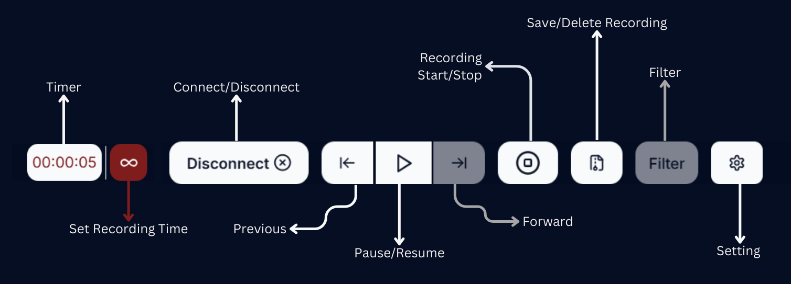
Chords-Web Icons#
Play/Pause Data Stream#
Mengklik tombol pause menampilkan frame terakhir yang disimpan.
Anda dapat melihat dan menyimpan hingga lima snapshot data Anda.
Snapshot diambil secara otomatis per frame.
Navigasi snapshot menggunakan tombol kiri dan kanan.
Mengatur Jumlah Saluran#
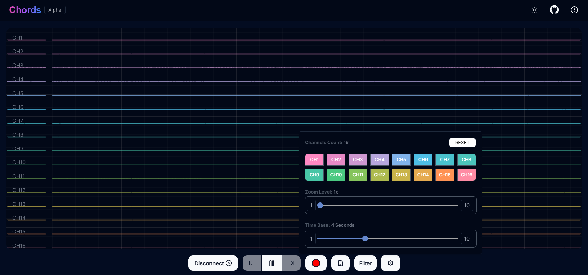
Chords-Web Channel Support#
Jumlah saluran yang tersedia tergantung pada papan pengembangan yang digunakan.
Pilih saluran tertentu dengan mengklik tombol saluran.
Gunakan tombol “Select All” untuk memilih semua saluran yang tersedia sekaligus.
Klik tombol reset untuk kembali ke saluran yang sebelumnya dipilih.
Merekam Data#
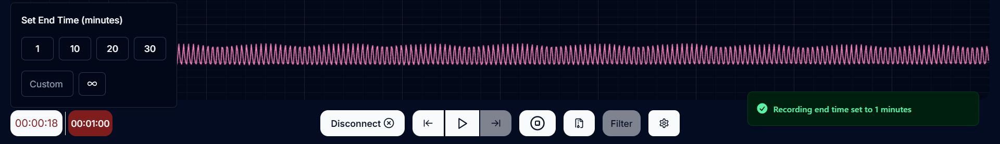
Recording Time#
Rekam data dalam format CSV untuk durasi yang ditetapkan atau tanpa batas hingga dihentikan secara manual.
Mulai perekaman dengan batas waktu yang ditetapkan atau rekam secara bebas dan hentikan kapan saja menggunakan ikon stop.
Efisien unduh atau hapus file yang direkam melalui menu popover.
File disimpan dengan aman di IndexedDB untuk manajemen yang lancar.
Kelola file individual dengan mengunduh file tertentu dan menghapusnya sesuai kebutuhan.
Mudah unduh semua file sebagai ZIP atau hapus dengan satu klik untuk manajemen file yang lancar.
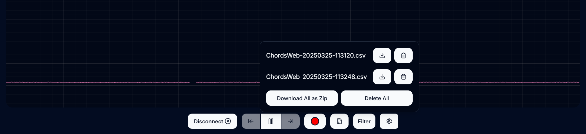
Save and Delete Option#
Memvisualisasikan sinyal EMG (Electromyography)#
EMG menangkap aktivitas listrik yang dihasilkan oleh otot rangka.
{kind=link}
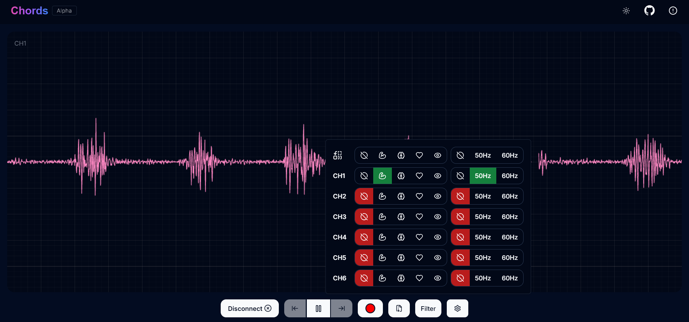
EMG Signal Example#
Memvisualisasikan sinyal EEG (Electroencephalography)#
EEG merekam aktivitas listrik otak dan umumnya digunakan untuk mendiagnosis kondisi neurologis dan mempelajari aktivitas otak.
{kind=link}
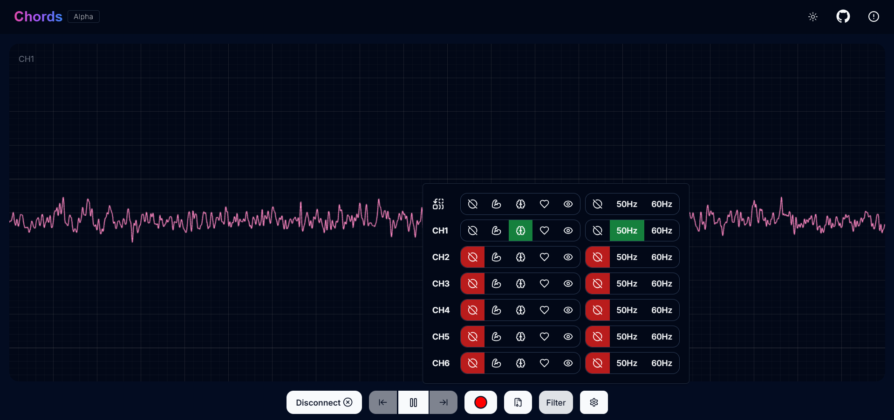
EEG Signal Example#
Tip
Untuk memastikan Anda merekam sinyal berkualitas tinggi, lihat panduan detail di sini: Troubleshooting EEG Signal Quality.
Memvisualisasikan sinyal EOG (Electrooculography)#
EOG mengukur potensi listrik yang dihasilkan oleh gerakan mata.
{kind=link}
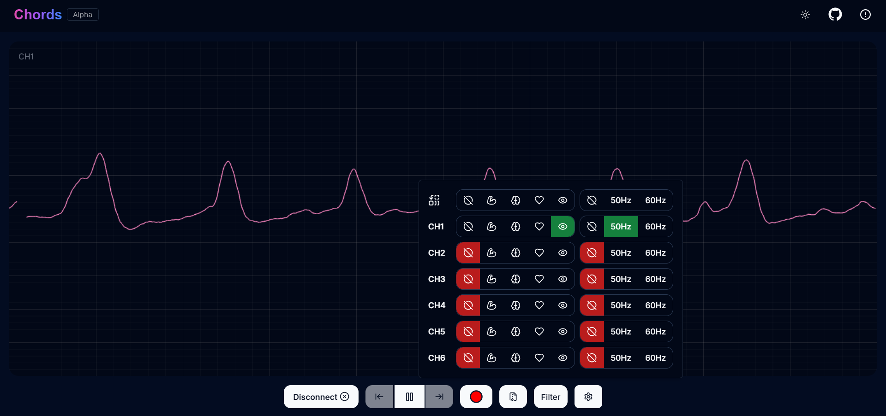
EOG Signal Example#
Memvisualisasikan sinyal ECG (Electrocardiography)#
Sinyal ECG (Electrocardiography) mewakili aktivitas listrik jantung. Sinyal ECG khusus ini digunakan baik dalam praktik klinis dan penelitian untuk mengevaluasi ritme jantung, mendeteksi kelainan, dan menilai kesehatan jantung.
{kind=link}
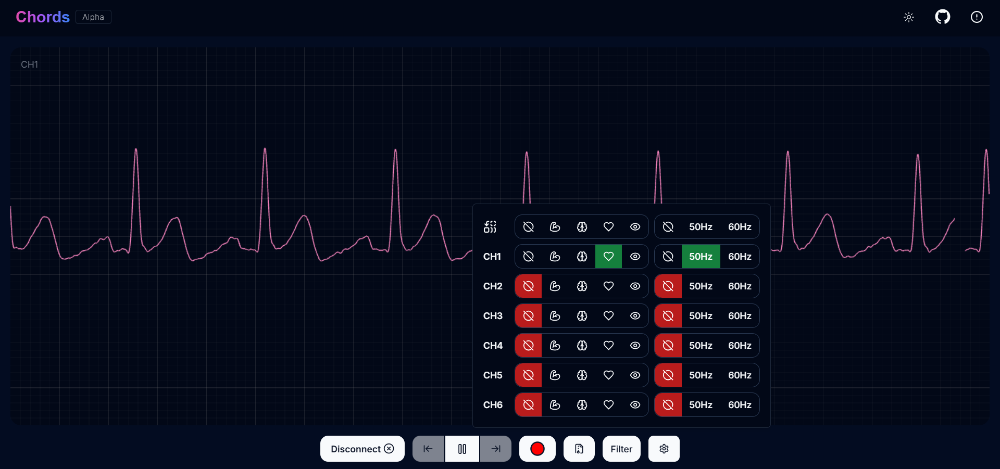
ECG Signal Example#
Opsi Lain untuk Dijelajahi#
Beralih Tema Cepat beralih antara mode terang dan gelap menggunakan tombol tema di bilah navigasi.
Kunjungi Repositori GitHub Akses repositori GitHub Chords Web melalui tautan di bilah navigasi.
Kontributor Lihat daftar kontributor menggunakan tautan di sudut kanan atas bilah navigasi.
Menjalankan Aplikasi#
Klik tombol
Visualize Nowuntuk menavigasi ke halaman aplikasi. Di sini, Anda akan menemukan dua opsi.Klik tombol
Chords Visualizeruntuk membuat koneksi dengan Arduino dan mulai streaming data.Gunakan tombol
ZoomIn/ZoomOutuntuk menyesuaikan visualisasi data.Gunakan tombol
Play/Pauseuntuk mengontrol stream data. Navigasi lima snapshot terakhir dengan tombolLeft/Rightdi fitur Frame Buffer.Klik tombol
Recorduntuk mulai merekam data ke dalam file CSV.Klik tombol
Downloaduntuk menyimpan data yang direkam.Klik tombol
Deleteuntuk menghapus data yang direkam.Klik tombol
Filteruntuk menerapkan filter untuk sinyal EMG, ECG, EOG, dan EEG: -Muscle(70Hz high-pass untuk EMG) -Heart(30Hz low-pass untuk ECG) -Eye(10Hz low-pass untuk EOG) -Brain(45Hz low-pass untuk EEG) - Gunakan tombol Master untuk menerapkan filter di semua saluran. - Terapkan filter 50Hz atau 60Hz ke saluran individual atau semua saluran.Pilih saluran melalui tombol
Channelsdi popover pengaturan.Sesuaikan zoom menggunakan slider
Zoomuntuk tampilan detail atau keseluruhan.
Serial Wizard Plotter & Monitor#
Ringkasan#
Serial Wizard Plotter & Monitor adalah fitur mandiri dalam Chords-Web yang menyediakan visualisasi data serial real-time.
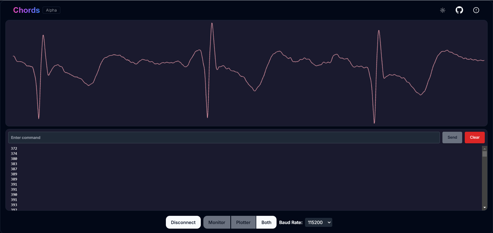
Chords-Web Filter#
Fitur#
Fitur |
Deskripsi |
|---|---|
Mode Tampilan Ganda |
Alat ini memungkinkan Anda beralih antara Plotter, Monitor, atau tampilan gabungan untuk visualisasi komprehensif. |
Rendering Data Dioptimalkan |
Di versi Arduino yang lebih baru, plotting data cepat dapat menyebabkan tampilan yang berantakan. Serial Plotter & Monitor dioptimalkan untuk menangani data frekuensi tinggi, memastikan representasi visual yang jelas dan akurat. |
Bilah Tombol Footer |
Mudah beralih antara mode tampilan yang berbeda menggunakan bilah tombol footer yang intuitif. |
Pemilihan Baud Rate |
Pilih dari beberapa baud rate untuk mengoptimalkan komunikasi serial berdasarkan persyaratan perangkat Anda. |
Bilah Navigasi |
Akses fitur seperti pengalihan tema (terang/gelap), kunjungi repositori GitHub, lihat detail kontributor, atau kembali ke halaman sebelumnya. |
Menjalankan Aplikasi#
Klik tombol Serial Wizard untuk meluncurkan Serial Plotter & Monitor.
Klik pada tombol Connect pilih papan.
Gunakan bilah tombol footer untuk beralih antara Plotter, Monitor, atau tampilan gabungan.
Navigasi menggunakan bilah atas untuk beralih tema, kunjungi repositori GitHub, lihat kontributor, atau kembali ke halaman sebelumnya.
Note
Lihat video YouTube kami untuk informasi lebih lanjut:
Analisis FFT dan Plotting Spektrum Band EEG#
Ringkasan#
Kami telah memperkenalkan analisis FFT (Fast Fourier Transform) dan plotting spektrum band EEG untuk meningkatkan pemrosesan sinyal real-time. Fitur ini memungkinkan Anda memvisualisasikan dan menganalisis band frekuensi EEG, memberikan wawasan yang lebih dalam tentang aktivitas otak.
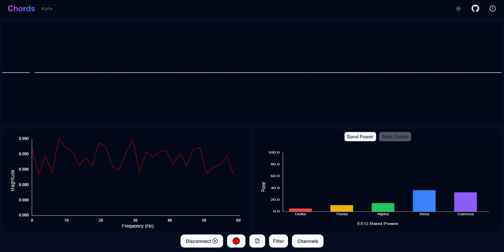
Chords-Web FFT Visualiser#
Fitur#
Fitur |
Deskripsi |
|---|---|
Unduh Data EEG |
Simpan data saluran yang direkam sebagai file CSV untuk analisis lebih lanjut, penyimpanan, atau visualisasi eksternal. |
Pemantauan Band EEG Langsung |
Lihat plot real-time nilai band EEG untuk pelacakan aktivitas otak yang lebih baik. |
Pemilihan Saluran |
Aktifkan/nonaktifkan saluran individual (CH0-CH2) untuk menyesuaikan input elektroda mana yang ditampilkan dan direkam. |
Band EEG yang Didukung#
Delta (0.5 - 4 Hz) → Berasosiasi dengan tidur nyenyak dan keadaan tidak sadar.
Theta (4 - 8 Hz) → Terkait dengan relaksasi, meditasi, dan tidur ringan.
Alpha (8 - 13 Hz) → Mencerminkan relaksasi terjaga, sering terlihat selama istirahat mata tertutup.
Beta (13 - 30 Hz) → Berhubungan dengan berpikir aktif, pemecahan masalah, dan fokus.
Gamma (30 - 45 Hz) → Terlibat dalam fungsi kognitif tingkat tinggi, perhatian, dan persepsi.
Menjalankan Aplikasi#
Pilih “FFT Visualizer” untuk melihat gelombang otak Anda secara real-time.
Anda akan mendapatkan dua opsi, pilih opsi yang sesuai berdasarkan bagaimana perangkat Anda terhubung:
Serial
Bluetooth
Segmen atas menampilkan data EEG yang difilter menggunakan filter low-pass 45Hz untuk menghilangkan noise.
Segmen bawah dibagi menjadi dua bagian:
Sisi kiri → Menunjukkan nilai frekuensi EEG dalam Hz.
Sisi kanan → Menawarkan dua mode interaktif:
Mode Band Power → Menampilkan nilai power band EEG real-time.
Mode Beta Candle → Visualisasi unik di mana lilin yang menyala mewakili tingkat fokus Anda.
Lilin lebih terang = Gelombang beta lebih tinggi = Fokus kuat.
Lilin redup = Gelombang beta lebih rendah = Gangguan.
Note
Lihat video YouTube kami untuk informasi lebih lanjut:
NPG Lite#
Ringkasan#
Kami telah menambahkan dukungan untuk NPG Lite, memungkinkan visualisasi sinyal real-time langsung dari BioAmp 3-saluran onboard. Didukung oleh ESP32-C6 dengan ADC 12-bit built-in, pengaturan tanpa masalah: cukup unggah firmware, nyalakan papan, dan mulai streaming secara instan.
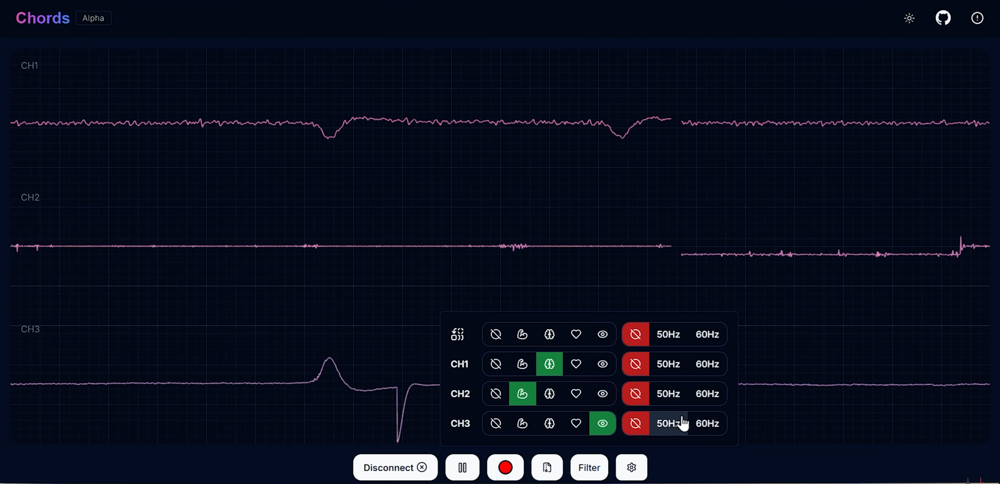
Chords-Web NPG Lite#
Fitur#
Fitur |
Deskripsi |
|---|---|
Bluetooth LE Nirkabel |
Stream hingga 3 saluran data bio-potensial melalui BLE - tidak ada kabel setelah power-on awal. |
BioAmp & ADC 12-bit Built-in |
Amplifier onboard dan ADC ESP32-C6 memastikan penangkapan sinyal berkualitas tinggi. |
Kontrol Interaktif |
Pilih saluran, play/pause live stream, terapkan filter bandpass & notch 50/60 Hz, dan rekam ke CSV. |
Menjalankan aplikasi#
Flash firmware yang benar - Kunjungi NPG-Lite Flasher dan unggah BLE firmware ke papan Anda.
Buka Chords-Web - Navigasi ke https://chords.upsidedownlabs.tech dan klik Visualize Now.
Pilih “NPG-Lite” - Dari daftar aplikasi, pilih NPG-Lite.
Aktifkan Bluetooth di komputer Anda - Nyalakan Bluetooth sistem Anda, lalu klik Connect di Chords-Web.
Pilih perangkat Anda - Pilih NPG-Lite Anda dari daftar perangkat yang tersedia.
Mulai streaming - Visualisasikan sinyal bio-potensial Anda secara real-time, pilih 1-3 saluran, toggle play/pause, terapkan filter, atau rekam ke CSV.
Kasus Penggunaan#
Neurofeedback & Pelatihan Fokus: Pantau power alpha/beta untuk melacak perhatian.
Rehabilitasi & Ilmu Olahraga: Kuantifikasi aktivitas otot (EMG) selama latihan.
Penelitian & Pendidikan: Tangkap data EEG/ECG/EOG yang disinkronkan untuk analisis.
Note
Lihat video YouTube kami untuk informasi lebih lanjut:
Rep Forge#
Ringkasan#
Kami telah menambahkan Rep-Forge - alat visualisasi EMG 3-saluran real-time untuk NPG Lite. Rep-Forge memungkinkan Anda memantau kekuatan otot saat berolahraga atau rehabilitasi, langsung di browser. Tidak diperlukan ADC eksternal atau papan pengembangan: cukup flash firmware, terapkan elektroda, dan mulai streaming.
Fitur#
Fitur |
Deskripsi |
|---|---|
Streaming EMG 3-Saluran |
Stream hingga tiga sinyal EMG simultan dari BioAmp onboard NPG Lite Anda. |
Deteksi Saluran Cerdas |
Secara otomatis menyoroti saluran otot aktif sehingga Anda dapat dengan cepat mengidentifikasi otot mana yang Anda gunakan. |
Bilah Kekuatan Langsung |
Grafik bilah dinamis diperbarui secara real-time untuk menunjukkan tingkat kontraksi relatif untuk setiap saluran. |
Filter Pengurang Noise |
Filter sinyal built-in menghilangkan interferensi mains 50/60 Hz dan artefak frekuensi tinggi untuk trace EMG yang lebih bersih. |
Konektivitas BLE Nirkabel |
Stream data melalui Bluetooth LE—tidak ada kabel yang dibutuhkan setelah papan dinyalakan. |
Menjalankan aplikasi#
Nyalakan NPG Lite Anda dengan membalik saklar on/off.
Hubungkan via USB-C dan flash Rep-Forge firmware menggunakan NPG Lite Flasher.
Cabut USB dan aktifkan Bluetooth di komputer Anda (atau gunakan Serial/Wi-Fi sesuai kebutuhan).
Buka browser ke chords.upsidedownlabs.tech, klik Visualize Now, lalu pilih Rep-Forge.
Klik Connect, pilih perangkat NPG Lite Anda dari daftar, dan tunggu bilah EMG langsung muncul.
Tempatkan elektroda pada kelompok otot target; tonton Rep-Forge secara dinamis menyoroti dan memplot kekuatan saluran aktif.
Kasus Penggunaan#
Pelatihan Kekuatan: Kuantifikasi aktivasi otot selama angkatan atau repetisi.
Rehabilitasi: Pantau kemajuan pemulihan di kelompok otot yang terluka.
Penelitian: Tangkap data EMG berkualitas tinggi untuk studi neuromuskular.
Teknologi yang Digunakan#
Next.js Kerangka kerja React untuk membangun aplikasi web.
{kind=link}

Tailwind CSS Kerangka kerja CSS utility-first.
{kind=link}
{kind=link}
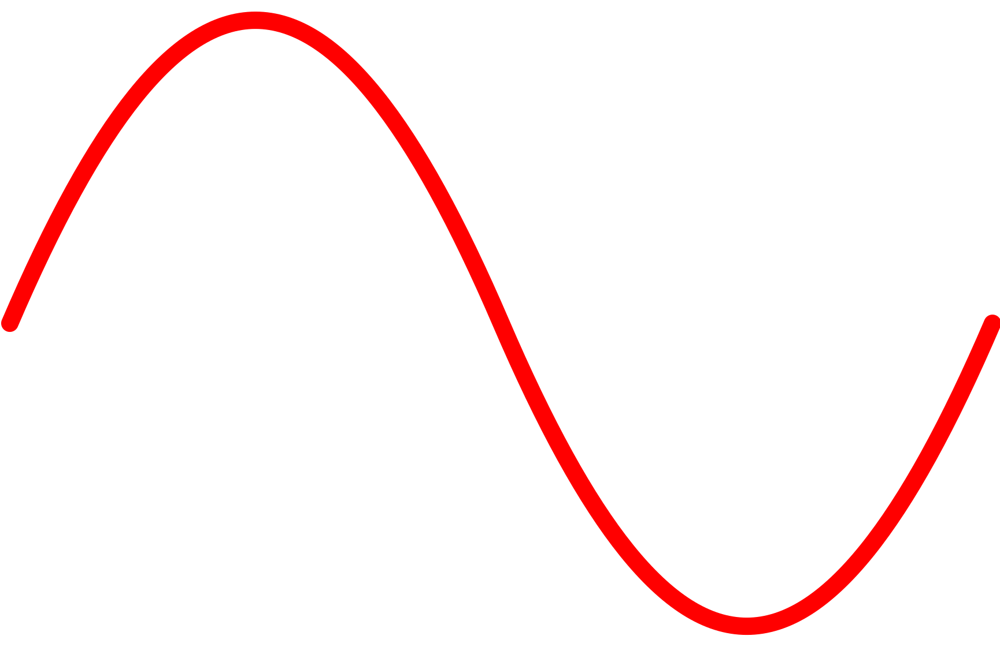
WebGL Plot Plotting real-time dengan WebGL.
{kind=link}
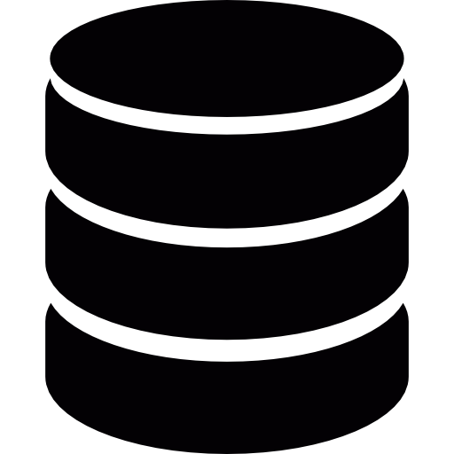
IndexedDB API Database lokal untuk aplikasi web.
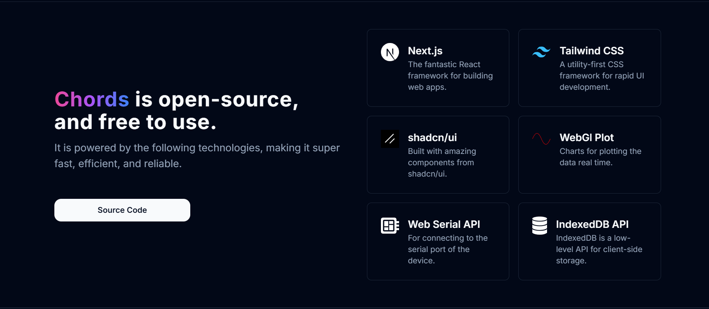
Chords-Web Tech Stack#